Your four questions, answered with measurements and renders. Almost every image here is made from real data: the fly's own spikes from dendrite's engine, and this exact fly's own micro-CT, electron micrographs, synapse map and neuron shapes from Janelia. Tick yes, maybe or no on each concept. Your picks are saved here and I read them back.
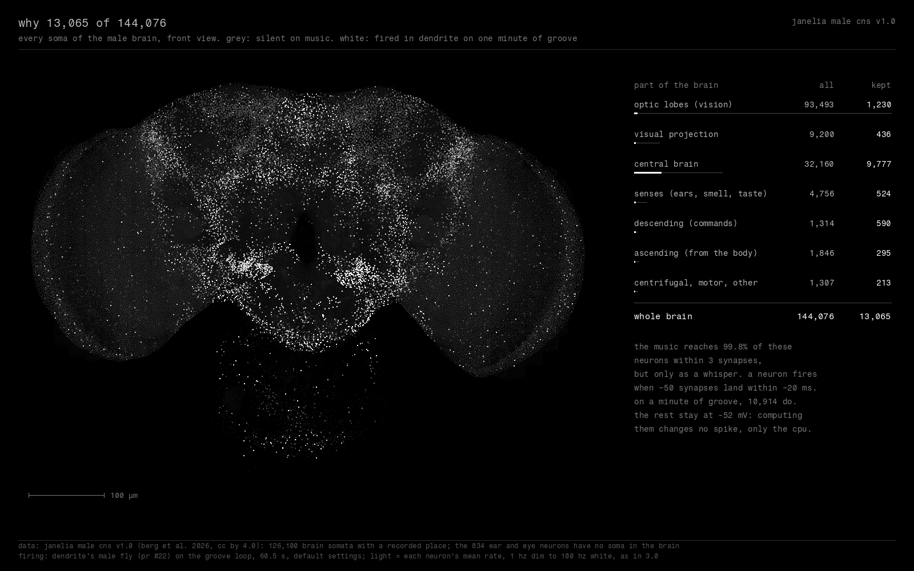
The short answer: the other 131,011 neurons never fire on music, and a neuron that never fires changes nothing. In this model (Shiu et al. 2024, the one dendrite runs), neurons only talk through spikes. A silent neuron sends nothing, so removing it leaves every other spike exactly where it was. The cut is the whole brain, spike for spike, on the music it was cut on.
Why are they silent? Because the music only enters through three doors. Dendrite feeds sound into 834 sense neurons: the ears (Johnston's organ), the looming detectors of the eyes (LPLC2, LC4), and smell. Within three synapses, that signal reaches 143,838 of the 144,076 neurons (99.8%). So it reaches almost everything, but only as a whisper. A neuron here fires when about 50 synapses' worth of input lands within its 20 ms memory (7 mV from rest to threshold, 0.14 mV a synapse). Only 10,914 neurons get that much on the groove.
Most of the brain waits for senses we don't give it. 65% of the brain is the optic lobes (93,493 neurons). They need a picture: 800 little eyes, moving edges, colour. Dendrite gives the eyes a shortcut (a loudness swell that looks like something coming closer), so only 1.3% of the optic lobes ever fire. The rest of the dark brain waits for taste, temperature, the legs and wings, gravity and the clock.
| the cut | whole brain | |
|---|---|---|
| neurons | 13,065 | 144,076 |
| connections | 1.76 M | 21.9 M |
| synapses | 12.7 M | 107.4 M |
| wiring in memory | 14 MB | 175 MB |
| one core, silent | 2.8% | 28% |
| one core, hearing a steady sound | 4 to 19% | 110 to 250% |
| whole plug-in today | ~15% | - |
measured here: a benchmark of dendrite's own brain step (the same lif neurons, 0.5 ms step, 2.5 ms delay, restless kicks) on both wirings, 20 s each, one core of the cloud machine. the plug-in's 15% is the male fly rendering the groove.
So a whole-brain fly would need one to two and a half whole CPU cores for one plug-in, against 15% now. Its 175 MB of wiring doesn't fit in the processor's cache, so every spike becomes a trip to slow memory. The plug-in file would grow by about 200 MB. And today's wiring format counts neurons with 16 bits, so it stops at 65,535.
One honest caveat. The cut is exact for the music it was cut on. In my benchmark, a steady buzz on every ear and eye (no tiring, unlike real music) woke 2,892 neurons outside the cut. New kinds of sound can wake neurons we cut away. That is a reason to re-cut on Hakan's own loops, not to run the whole brain.
Show the fly a picture of the sound: the spectrogram scrolling past its 800 little eyes. Its motion detectors (T4 and T5, 13,580 neurons) would see a rising pitch as an edge moving up. Its object detectors would treat a note as a small moving thing, and a swelling chord as something about to hit it. The looming reflex would come from real shapes, not from our loudness shortcut.
cost: +93k neurons, ~1 to 2 cores. possible as a slower second brain (below)Keep the 13k reflex brain in the audio thread, where it must never be late. Run the whole 144k brain on a background thread, a few hundred milliseconds behind, as the fly's slow mind. It would feed the moods, fear and attention, and it could never cause a click, because the audio thread only reads what it last said.
cost: one background core while the window is open, or only while playing. real-time safeThe male fly sings to a female with one wing: pulses about every 35 ms, and a hum near 150 Hz. The circuit is in this brain (P1 and pIP10 command it) and in the nerve cord (the pattern). With the nerve cord added, the fly could make a voice of its own, from its own wiring. It's a gamble: nobody has shown that this model sings by itself.
cost: +22k nerve-cord neurons; research first, offlineThe central complex keeps the fly's heading as a bump of activity running around a ring (the 46 EPG neurons, already in the cut). Fed with your stereo image, the bump would follow where the sound sits, and the window could draw the real needle. It is cheap and visible, and it is honest.
cost: about 3k neurons, a few % of a coreRun the whole brain offline on 20 of your loops (drums, voice, field recordings, full mixes) and keep every neuron that ever fired. The cut stays exact for the music you really make. It's the cheapest way to more brain.
cost: an hour offline; the cut might grow by a few thousandHow I read "past light": the light that stays after the firing is gone. In the 3.0 window, a neuron's brightness is the past: a 300 ms trace, plus the session's exposure. In sound, the same idea is the itch's afterglow. Every imaging method in science is, at heart, a choice of how long the past keeps glowing. Voltage imaging forgets in 3 ms; calcium in a second; fMRI shows what happened five seconds ago; a 2-deoxyglucose film keeps the whole session. So I rendered the same moment of the same fly through each one. The moment is 34.8 s into the groove, a reflex: the giant fiber at 71 Hz.
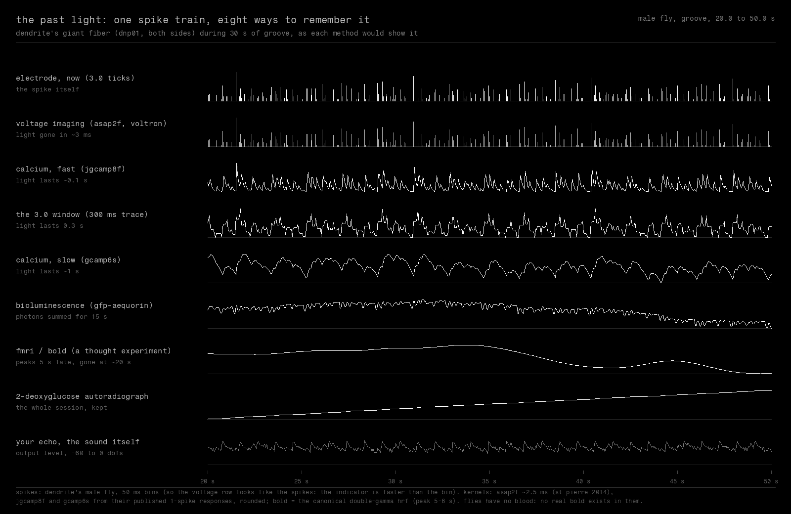
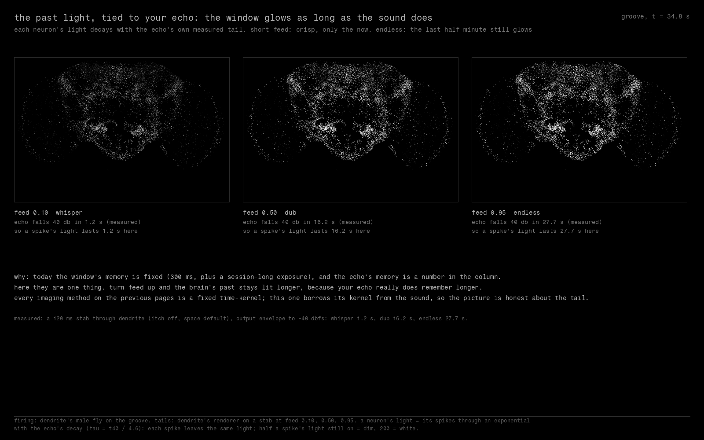
The neurons' light decays with the echo's own measured tail. At whisper only the now is lit; at endless the last half minute still glows. You can see your echo's memory as the brain's memory.
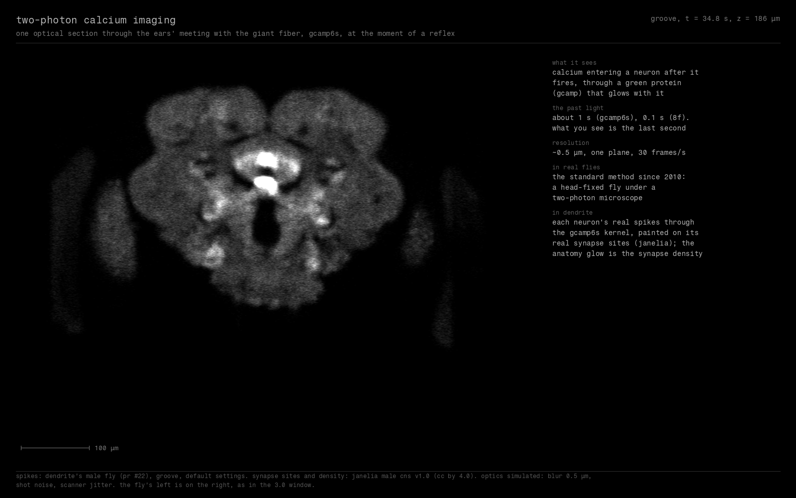
One optical section, gcamp6s. The real spikes are painted on each neuron's real synapse sites, so the glow sits in the neuropil where it would in a real fly. The past lasts about a second.
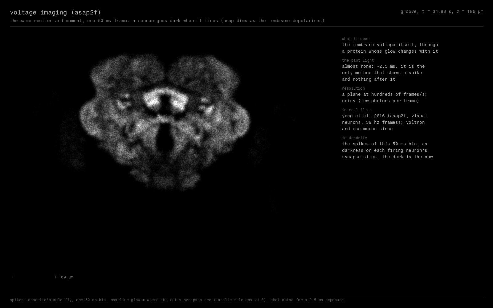
The only method with no past: the protein dims while the membrane fires and recovers in 3 ms. Here, firing is darkness. It's noisy and alive, a strange inversion for the rig.
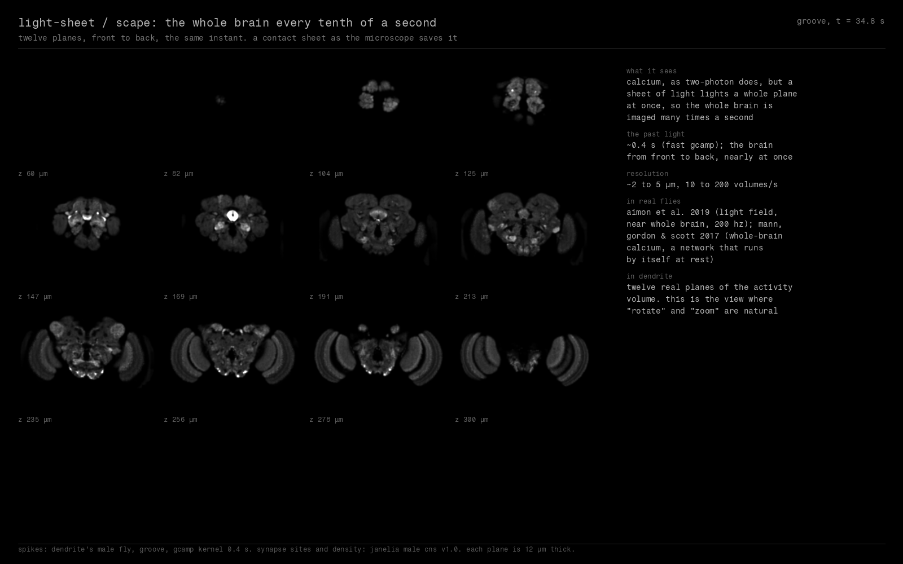
The whole brain at once as twelve planes, front to back, the way the microscope saves a volume. It's the natural home for "rotate" and "zoom", since the data is already 3D.
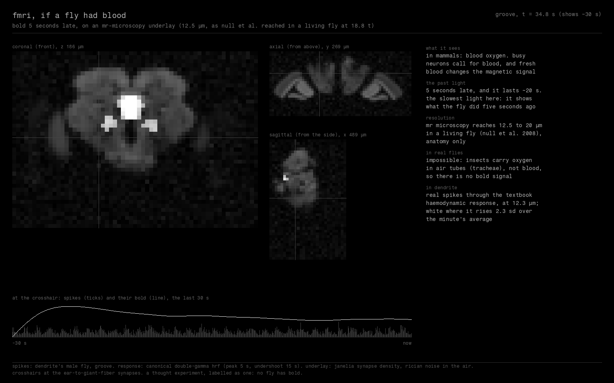
Three views with a crosshair, as every fMRI viewer has. The activation is the real spikes through the textbook blood response, five seconds late. Flies breathe through air tubes and have no blood oxygen signal, so this can never be real. That's said on the image.
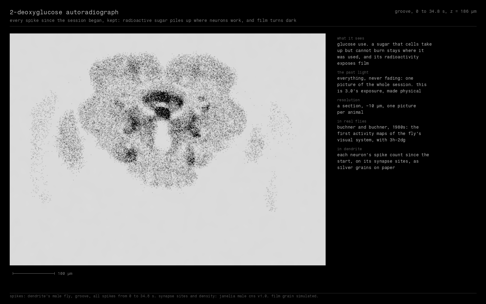
Everything since the session started, kept as silver grains on film. It's 3.0's exposure made physical, and the one bright image among the dark ones. It could become each take's portrait (see the ideas).
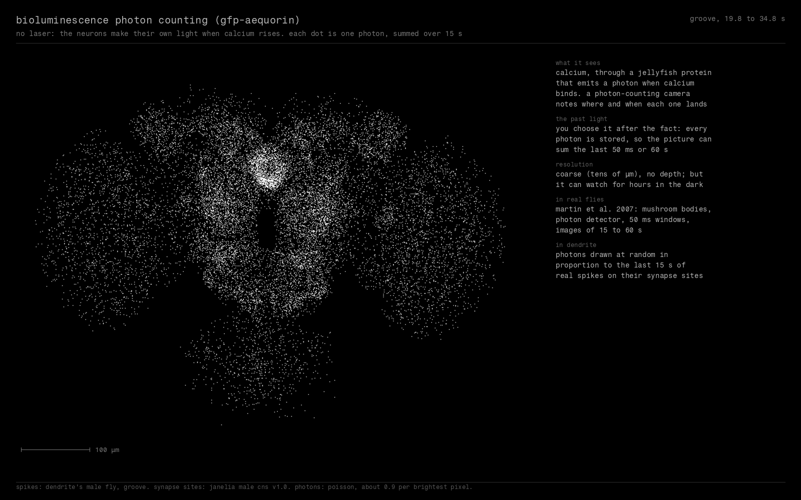
No laser. The neurons glow by themselves when calcium rises, and a camera counts single photons. Each dot is one photon; you choose afterwards how long to sum them. It's the most literal "past light" there is.
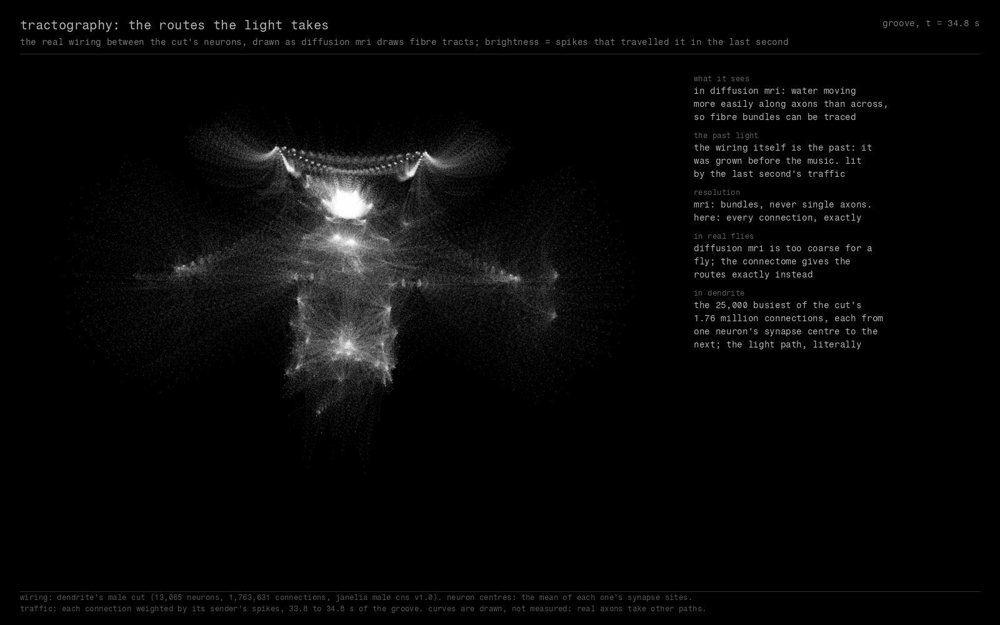
The 25,000 busiest of the cut's 1.76 million connections, drawn the way diffusion MRI draws fibre tracts, lit by the spikes that travelled them in the last second. These are the routes the light actually takes.
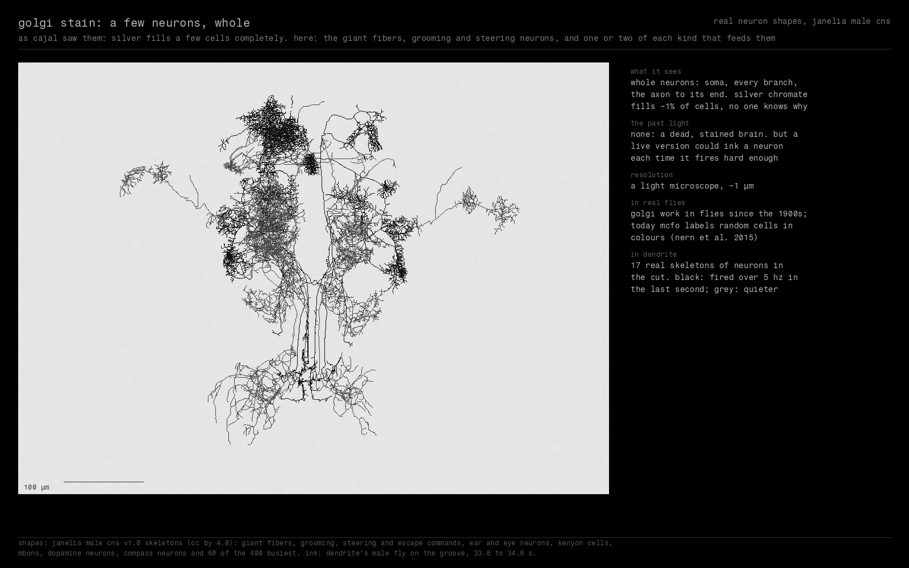
Seventeen real neurons drawn whole from Janelia's skeletons: both giant fibers, grooming and steering commands, an ear neuron, looming detectors, Kenyon cells, memory and dopamine neurons, a compass neuron. Black means it fired hard in the last second. The scars could become inked neurons like these.
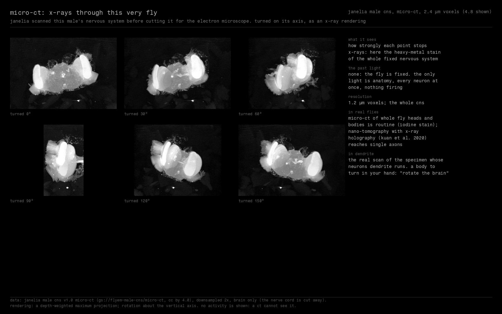
Janelia X-rayed this male's nervous system before slicing it for the electron microscope. This is the actual specimen whose neurons dendrite runs, turned on its axis. A CT can't see firing, so it's the body you hold, not the mind.
The crosshair fails for a simple reason. Its two axes are abstract, so the hand has nothing to hold and the eye has nothing to read. Every concept below keeps the same two parameters (feed and space), the same ids and the same saved values. What changes is the gesture, and each gesture means something physical you can see. The press-anywhere throw stays.
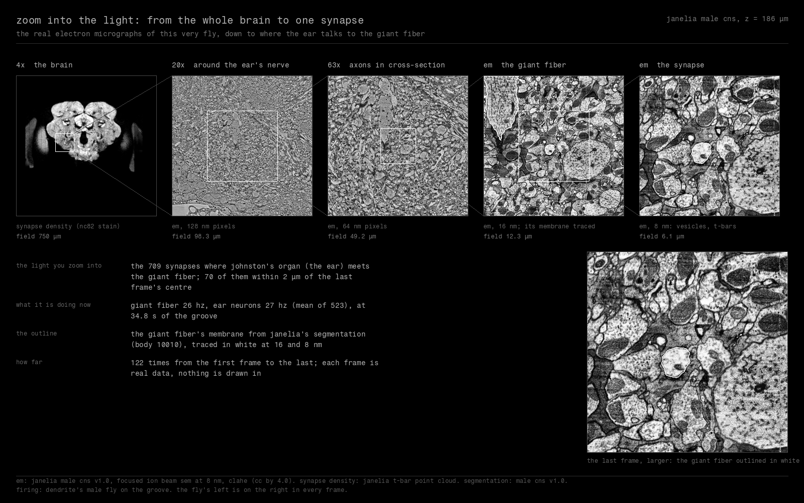
From the whole brain down to one synapse: the 709 places where the ear talks to the giant fiber. Every frame is a real electron micrograph of this fly, 122 times closer at the end. The giant fiber's membrane is traced in white from Janelia's segmentation.
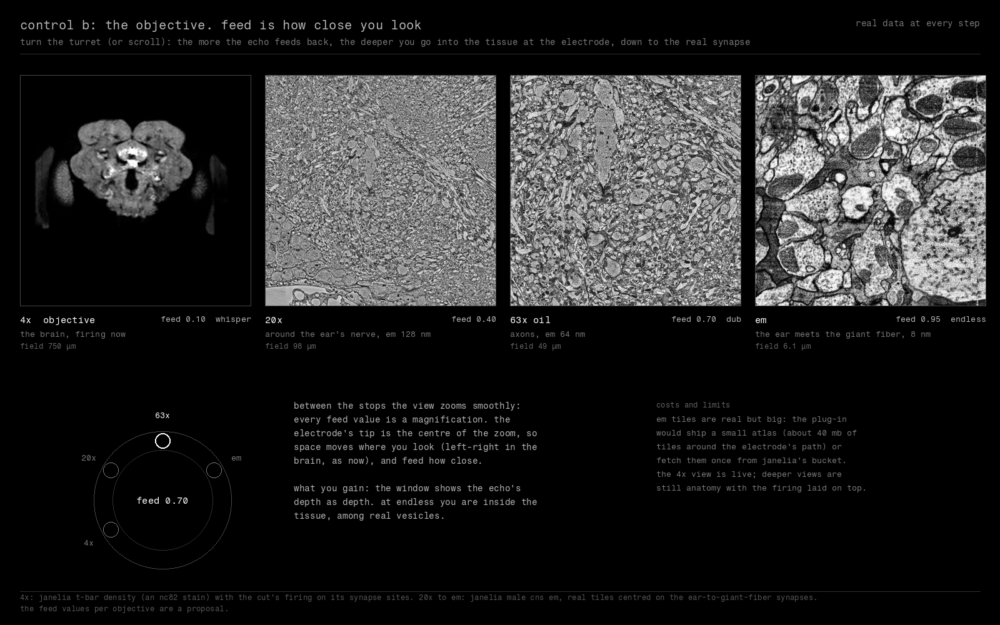
Turn the turret or scroll. Feed sets the magnification: at whisper you see the whole brain firing, and at endless you are among real vesicles at the electrode's tip. Space moves where in the brain you look. The echo's depth becomes visual depth.
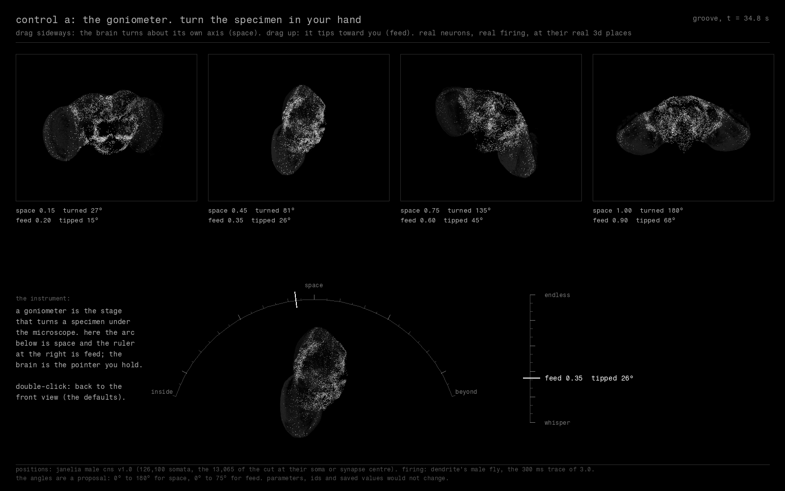
Drag sideways and the brain turns about its own axis: that's space, from inside (front view) to beyond (seen from behind). Drag up and it tips toward you: that's feed. Every neuron sits at its real 3D place and fires for real. The engraved arcs read in degrees and in words.
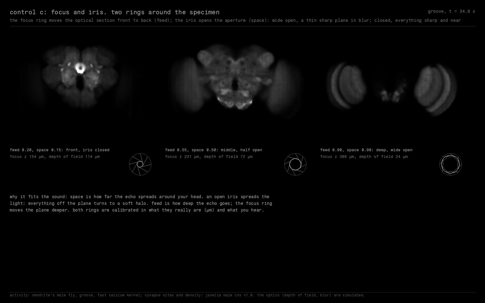
The focus ring moves the optical section from front to back (feed: deeper echo, deeper plane). The iris opens the aperture (space): wide open, one thin plane is sharp and the rest dissolves into halo, like a wide echo around your head. Closed, everything is near and sharp.
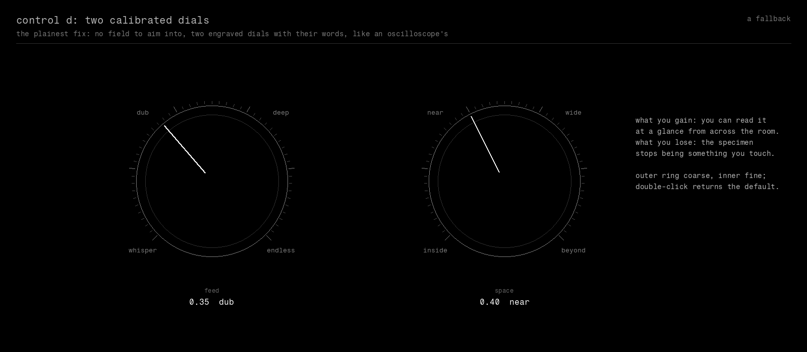
Two engraved dials like an oscilloscope's. You can read them from across the room. You lose the feeling of touching the specimen.
When keep saves a take for Live, it also saves a 2-deoxyglucose image of what the brain did during those bars: a brain-print of the sound. You'd get the WAV and its autoradiograph side by side in the log, and the picture could go with the file.
question 2 · window and keepIn labs, red light opens a channel (CsChrimson) and makes chosen neurons fire. Here, pressing on a region of the specimen would really make those neurons fire in the simulation. Press the ears and the fly hears a ghost; press the giant fiber and it jumps. The fly answers with its own reflex, so you play the fly instead of the echo.
question 3 · changes the sound: a new feature, an a/b build firstOne small selector: voltage, calcium, bold, 2-dg. It changes only how long the past glows and how it looks. The fly and the sound stay the same, so it's honest and cheap.
question 2 · window onlyA small inset at the electrode's tip shows the real electron micrograph of the tissue it sits in, with the busiest neuron's membrane traced. As you move it, you pass through real axons and synapses.
question 3 · window only, needs the em atlasWhen a neuron is scarred, draw it whole, in Golgi ink, from its real skeleton. After an hour the window becomes a Cajal drawing of everything that hurt the fly.
question 2 · window only, needs skeletons of the cut (about 60 MB)Hold and drag back along the raster to see the brain as it was a few seconds or a minute ago. Keep already holds the last minute of sound, so letting go there could mark a take from that moment.
question 2 · window and keepData: Janelia male CNS v1.0 (Berg et al. 2026, CC BY 4.0): wiring, synapse sites, skeletons, segmentation, EM, micro-CT. Spikes: dendrite's male fly (PR #22) in the offline renderer, groove loop, default settings.
MRI of a living fly: Null et al. 2008, 18.8 T, 12.5 to 19.5 µm. Voltage imaging: Yang et al. 2016, ASAP2f. Photon counting: Martin et al. 2007. Light-field whole brain: Aimon et al. 2019. Whole-brain calcium network: Mann, Gordon and Scott 2017. 2-deoxyglucose in the fly: Buchner and Buchner.
simulated, and labelled so on every image: optics (blur, noise, depth of field), indicator time courses, the bold response, film grain and photon draws. never simulated: positions, wiring, shapes, micrographs, x-rays, spikes, and the echo's measured tails.